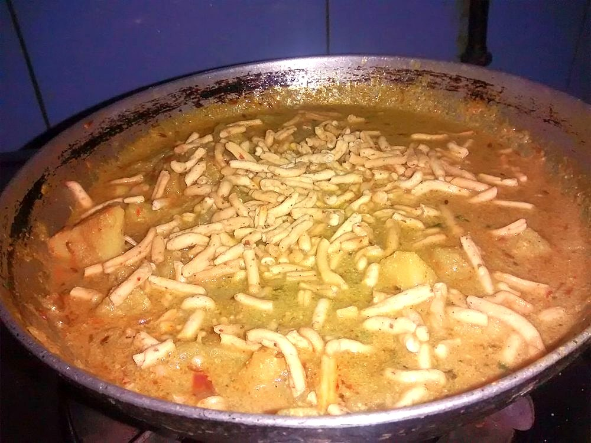

Aloo ki Bhujia
dry potato fingers tempered with panch phoron and mustard oil, crisp at the edges and no onion in sight

Contains: mustard
Checked against the ingredient list for ten allergens: milk, egg, fish, crustaceans, tree nuts, peanuts, sesame, mustard, soy and gluten. Brands vary, so read the label on anything new to you.
Ingredients
Quantities for 4.
- 500g, cut into 5mm fingers Potato
- 4 tbsp Mustard Oil
- 1.5 tsp Panch Phoronthe Bihari five-spice temper of fenugreek, nigella, cumin, fennel and mustard seed
- 2, broken Dried Red Chilli
- 1/4 tsp Asafoetidause compounded-free hing to keep this gluten-free
- 3/4 tsp Turmeric
- 1/2 tsp Chilli Powder
- 1 tsp Coriander Powder
- 2, slit Green Chillioptional
- 1/2 tsp Amchurfor a sour finishoptional
- 2 tbsp, chopped Coriander Leavesoptional
- to taste Salt
Cookware
kadhai, stovetop
Before you start
- Cut the potatoes into even 5mm fingers and rinse off the surface starch, then dry them thoroughly on a cloth. Wet potato steams instead of frying.
- Have the panch phoron measured out by the pan. It burns within seconds of going into hot mustard oil.
- Peeling is optional; thin-skinned new potatoes are better left unpeeled here.
Method
- Heat the mustard oil in a kadhai until it smokes faintly, then drop the heat to medium.Take mustard oil to smoking point every time. Unheated, it leaves a raw bitterness through the whole dish.
- Crackle the panch phoron and broken red chillies for 15-20 seconds, until the fenugreek seeds darken and the mustard seeds start popping.The moment the fenugreek goes past brown it turns bitter; pull the pan off the heat if it is moving too fast.
- Add the asafoetida, swirl once, then tip in the potato fingers and 3/4 tsp salt.
- Toss to coat and spread the potatoes in one layer. Fry undisturbed 4 minutes, then turn and fry 4 minutes more.
- Sprinkle over the turmeric, chilli powder and coriander powder and toss gently to coat every piece.
- Cover and cook on low for 8 minutes, shaking the pan twice, until a potato finger crushes easily against the side.Shake the pan rather than stirring with a spoon, or the fingers break into mash.
- Uncover, raise the heat and fry a final 3-4 minutes until the edges are golden and crisped.
- Add the slit green chillies and amchur, toss, and finish off the heat with coriander leaves. Serve with dal and rice or with hot puris.
Storage
Keeps 2 days refrigerated. Reheat in a dry pan over high heat for 3-4 minutes to bring the crisp edges back. A microwave leaves it limp.
Nutrition Medium estimate
Low protein: 3+ g a serving, 6% of the calories
| Per serving153 g | Per 100 g | |
|---|---|---|
| Calories | 236+ kcal | 155+ kcal |
| Protein | 3.3+ g | 2+ g |
| Carbohydrate | 24.6+ g | 16+ g |
| of which sugars | 1.7+ g | 1+ g |
| Fibre | 3.5+ g | 2+ g |
| Fat | 14.7+ g | 10+ g |
| of which saturated | 1.7+ g | 1+ g |
| of which unsaturated | 11.7+ g | 8+ g |
The + means ingredients given to taste rather than by weight are counted as zero, so the true figure is a little higher than shown. Worked out from the listed quantities. Some of the ingredient list is given to taste rather than by weight, so treat these as a guide. Ingredients given to taste rather than by weight are counted as zero, so the real figure is a little higher than this. The + says so. Some ingredients have no exact match in the nutrient database and use the nearest equivalent: amchur, asafoetida, panch phoron. Estimated from raw ingredients using USDA FoodData Central. Cooking changes are not modelled, and added salt is excluded, so sodium is not given.
Written and checked against sources, not cooked in a test kitchen. Times, yields, allergens and nutrition are worked out rather than measured, so use your own judgement on doneness and on storing. More in About.